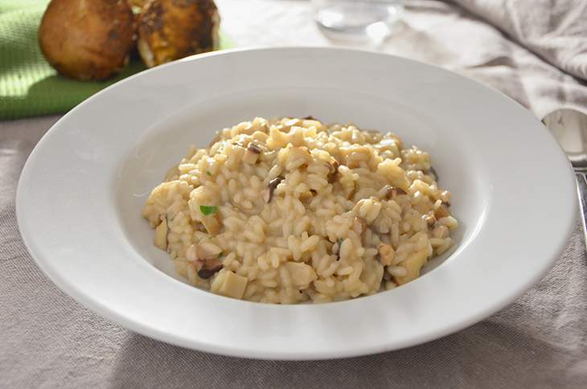
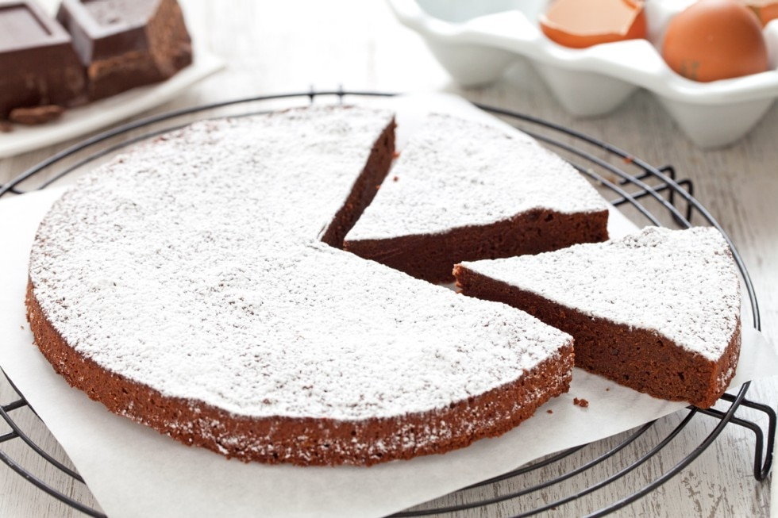
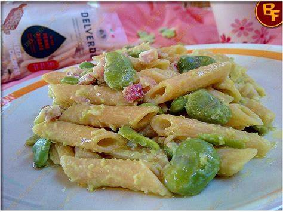
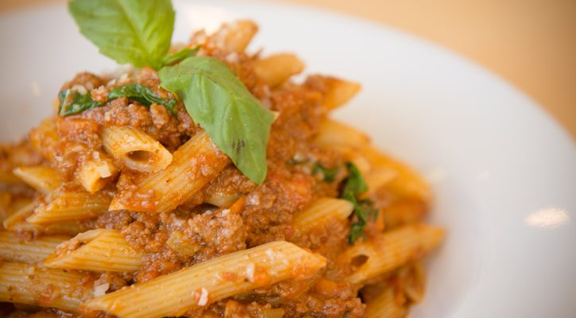
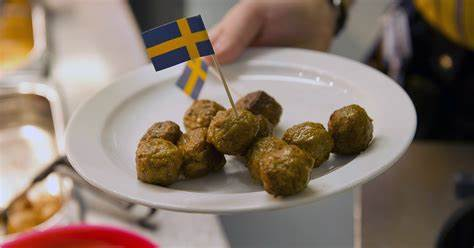

Per prima cosa pulite i funghi porcini. Con un coltellino raschiate il gambo e tagliate accuratamente la parti più legnose. Con una spazzolina o un pennello robusto eliminate la terra.Tritate finemente lo scalogno e mettetelo a soffriggere in poco olio.Quando lo scalogno sarà diventato trasparente aggiungete il riso e fate tostare per qualche minuto.Sfumate con il vino bianco, tenendo ancora la fiamma alta, e mescolate fino a quando il vino non sarà ritirato.Iniziate a bagnare il riso con il brodo. Aggiungete i gambi dei funghi, tagliati a dadini, continuando a bagnare.Nel frattempo tagliate i cappelli dei porcini a lamelle e aggiungeteli al riso quando è quasi cotto. Conservate alcune lamelle per il finale.Spegnete il fuoco.Aggiungete il burro, il formaggio grattugiato e il prezzemolo tritato e girate generosamente.Fate riposare 2 minuti controllando che il risotto sia ancora all'onda (cioè non completamente ritirato e compattato) e trasferitelo nei piatti. Battete il piatto sul tavolo per livellare il risotto e completatelo con tre lamelle di porcino e una spolverata di pepe nero appena pestato al mortaio. Il vostro risotto ai funghi porcini è pronto per essere servito!
Per preparare la torta tenerina iniziate a tritare finemente il cioccolato, poi trasferitelo in una bastardella posta in un tegame con acqua (possibilmente l'acqua non dovrebbe venire a contatto con il fondo della bastardella o pentolino in cui avete versato il cioccolato) e scioglietelo a bagnomaria, mescolando di continuo. Solo quando il cioccolato sarà già sciolto, ma non eccessivamente caldo unite il burro a pezzetti e lasciate sciogliere anche questo continuando a mescolare. Poiché l’esatta temperatura di fusione del cioccolato è intorno ai 50°, il burro va aggiunto solo quando il cioccolato è sciolto, facendo in modo che non superi il suo punto di fusione (che è di circa 32°), ed evitando quindi che si separi. Lasciate intiepidire il composto di cioccolato e burro, mescolandolo di tanto in tanto, e nel frattempo separate i tuorli dagli albumi in due ciotole differenti e capienti. A questo punto aggiungete a questi ultimi metà dello zucchero e montateli fino ad ottenere un composto fermo e spumoso enete da parte gli albumi montati a neve e versate nei tuorli la parte restante di zucchero, poi montate il tutto a velocità moderata fino ad ottenere un composto chiaro e spumoso. A questo punto con le fruste ancora in azione versate a filo il composto di cioccolato e burro ormai tiepido, e continuate a sbattere fino a che non otterrete un composto uniforme Aggiungete a questo punto gli albumi montati a neve in più riprese: aggiungete inizialmente circa 1/3 degli albumi mescolando con una spatola o con una frusta. Incorporate poi gli albumi restanti questa volta mescolando delicatamente dal basso verso l'alto. Unite la farina a pioggia e mescolate sempre con una spatola facendo dei movimenti delicati dal basso verso l'alto fino ad ottenere un composto liscio ed uniforme. A questo punto imburrate e infarinate uno stampo a cerniera da 23 cm (così sarà più facile sformare la torta tenerina) e versate al suo interno l'impasto appena preparato (17-18). Cuocete in forno statico preriscaldato a 180° per 30-35 minuti (si sconsiglia l'utilizzo del forno ventilato che potrebbe cuocere troppo l'esterno della torta e troppo poco la parte interna). Una volta sfornata lasciate intiepidire la vostra torta tenerina prima di sformarla 20 e di cospargerla di zucchero a velo.
Fate un soffritto di cipolla, aggiungete le fave e un rametto di maggiorana cucinando il tutto a fuoco lento. Quando le fave sono cotte aggiungete la ricotta e se il condimento risultasse denso diluitelo con l’acqua di cottura della pasta. Scolate la pasta aldente, fatela saltare on padella insieme al condimento e servite con un pizzico di pepe rosso. Buon appetito!
La prima cosa da fare, naturalmente, è preparare la pasta.Sul nostro piano di lavoro dobbiamo disporre la farina a fontana e il sale. Al centro andiamo ad aggiungere l’acqua, meglio se leggermente tiepida, poco alla volta e nel mentre iniziamo ad impastare, facendo diventare il nostro impasto liscio.Dopodiché dovremo far riposare l’impasto per circa un’ora, avvolgendolo in un canovaccio.Finito il riposo andiamo ad infarinare il piano di lavoro e stendiamo il panetto ricavando dei piccoli cilindri simili ai grissini.A questo punto andiamo ad utilizzare il buso, attorcigliando su di esso una sezione dell’impasto, lo facciamo aderire per bene e lo andiamo ad estrarre. Così quindi faremo per tutte le altre sezioni.Terminato il lavoro dovremo disporre la pasta su un canovaccio infarinato e lasciamole asciugare per qualche ora, dopodiché saranno pronte per essere cotte. Fatto questo, passiamo poi alla preparazione del nostro ragù. Per prima cosa dobbiamo far soffriggere la cipolla, con abbondante olio, per circa 5 minuti.Uniamo la carne e le cotenne tagliate a strisce. Dopo circa 10 minuti andremo ad aggiungere il vino e il pomodoro.Ultimo passo, aggiungiamo tutti gli altri ingredienti.Dopodiché dovremo mettere il sale ed eventualmente un pò di pepe, facendo cuocere per 4-6 ore a fuoco basso ed il ragù sarà finalmente pronto.Fatto questo ci basterà prendere la pasta, cuocerla in acqua salata, lasciarla al dente e condirle con il nostro ragù.Come guarnizione, volendo, possiamo mettere due foglioline di basilico sopra la pasta.
Preparare le polpette di carne a base vegetale è facile. In una terrina mettete la carne vegetale e lavoratela con le mani. Unite la mollica, il grana, il prezzemolo e l'aglio tritato.Aggiungete le uova e amalgamate. Se troppo morbido, aggiustate con il pangrattato. Completate con sale e pepe.Formate le polpette e passatele nella farina di semola.Friggetele in olio ben caldo. Una volta dorate, estraetele con l'aiuto di schiumarola e poggiatele su carta fritti per levare l'olio in eccesso. Le polpette di carne a base vegetale sono pronte.
